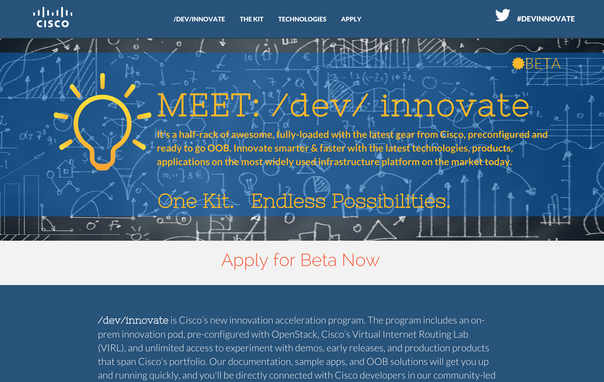
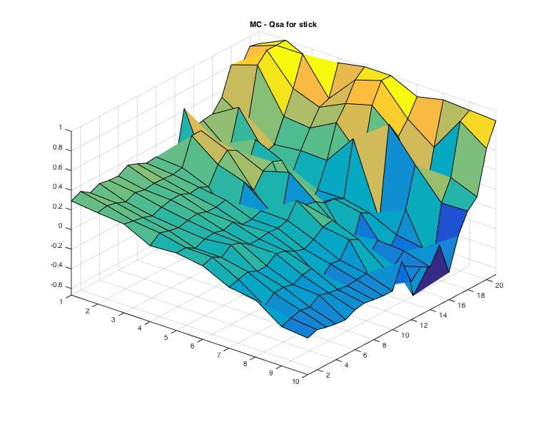

I am a software engineer in the Data Insights team at Swiftkey, a smart prediction mobile app startup that uses AI to improve the quality of its word predictions.
Previously I studied Electronic Engineering at University College London and worked as a part-time software engineer for Cisco Systems following a one year-long internship that I did with them in Silicon Valley.
I am passionate about startups, I have founded Play Palo Alto, a social startup that won the first prize at the Palo Alto App Challenge 2014.
I am also passionate about AI; I studied Supervised and Reinforcement Learning Master courses during my Undergrad at UCL and my thesis was focused on pattern recognition. I am seeing myself in future mostly going forward with my passion for Artificial Intellingence.
University College London, UK
Awarded First Class Honors with Distinction
London School of Economics, UK
2 Months Course
Lodi, Italy
5 years
Wyandotte (OK), US
1 year
Cisco Systems, CA
• Improving searchability of Cisco research papers by building a Solr server
Cisco Systems, CA
• Improved business and strategy skills while working with the senior director of Strategy and Planning.
• Built first public platform using new Cisco cloud technology running on top of Openstack
• Exposed to high level projects (one of my apps was presented during one of the executive keynotes at
Cisco Live SF 2014 conference; ~25k attendees)
• Improved communication skills by interacting with executives and managers on a daily basis
• Improved team working skills by applying the concept of scrum meetings and agile development
City of Palo Alto, CA
San Francisco
Matlab
Python
Java
Apache Spark
Django
APIs


MONTE CARLO CONTROL FOR EASY21